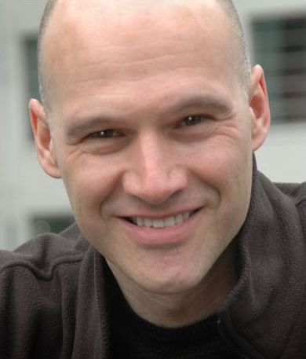
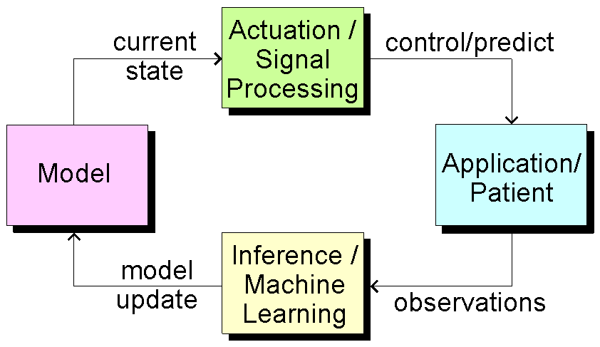

Bert de Vries, Ph.D.
Technical University Eindhoven
Faculty of Electrical Engineering, rm. PT-3.15
P.O. Box 513, 5600 MB Eindhoven
The Netherlands
e-mail: bdevries@ieee.org
News
- Multiple research projects, ranging from B.Sc.-level to fully funded Ph.D. tracks are available. (posted January 2014).
Research Interests
My professional research interests encompass Signal Processing (SP), Machine Learning (ML) and applications to medical engineering problems. SP and ML form complementary fields for the design of in-the-loop medical information processing algorithms (cf. the figure). In general, data obtained from measurements on a patient (e.g. physiologic signals) or environment are processed by machine learning techniques to update an observation model. Based on the current state of the model, efficient signal processing techniques can be applied to control the application. In this general framework, my research interest concerns the design of in situ adaptive systems, currently focussing on hearing rehabilitation algorithms.
Short CV
I grew up in Utrecht, the Netherlands, and received M.E. (1986) and Ph.D. (1991) degrees in Electrical Engineering from the Technical University Eindhoven and the University of Florida, respectively. From 1992 until 1999 I worked at Sarnoff Research Center in Princeton (New Jersey, USA) where I conducted research on a wide range of signal and image processing topics such as word spotting, financial market prediction and breast cancer detection from mammograms. Since April 1999 I have been employed in the hearing aids industry, currently at GN ReSound, where I design signal procesing algorithms for the next generation of hearing instruments. I am also a part-time full Professor in Personalization of Medical Signal Processing Systems at Eindhoven University of Technology (TU/e). At TU/e, I teach the course Adaptive Information Processing to graduate electrical engineering students. My research is inspired by the belief that recent results in machine learning and computational neurosciences will support a rapid development of the computer hearing field in a similar manner as is currently happening for the computer vision field.